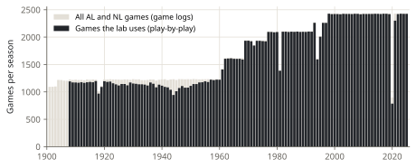

Lab note 1 of 6 · What are the odds?
From scorebooks to fifteen million game states
Every model in this lab starts from one question: at this moment of a game, how often did the home team go on to win? To answer it we need the moment, for every plate appearance of every game we can get. This note is about getting it right.
Where the data comes from
Retrosheet is a volunteer project that has typed in the play-by-play of almost every major-league game, from scorebooks, newspapers and club records. It is free for any use as long as its notice comes along:
The information used here was obtained free of charge from and is copyrighted by Retrosheet. Interested parties may contact Retrosheet at "www.retrosheet.org".
The lab reads Retrosheet's official releases from the Chadwick Baseball Bureau's mirror on GitHub (branch official, an exact copy of each release). It fetches only the files it needs (the regular-season event files and the game logs), keeps them in data/raw/, and on a rebuild asks only for what changed.

The lab uses 197,645 of the 202,654 AL and NL games decided from 1908 to 2025 (97.5%): Retrosheet has the play-by-play of nearly all of them, and the rest are left out for the reasons below. Before 1908 its regular-season files are box scores only, so the lab starts there.
What an event file says
An event file is one line per record. A game starts with id and info lines, the lineups (start, sub), and then one play line per event:
play,9,1,smitj001,32,BCFBX,S8/G.2-H;1-3
Ninth inning, bottom (1: the home team bats), the batter, the count, the pitches, and the event: a single to centre field on a ground ball (S8/G), the runner from second scores (2-H), the runner from first goes to third (1-3). There are a few dozen kinds of event (hits, walks, outs with the fielders who made them, steals, wild pitches, errors) and a small grammar for where each runner went.
The parser
The parser (src/whiff_lab/retrosheet.py) replays each game play by play. It keeps three things: which bases are taken, how many are out, and the score. Each time a new batter steps in, it writes down the state. It doesn't need to know who the runners are, only where they are.
Most of the notation says exactly where everyone went. A few rules are implied, and they are where a parser goes wrong:
- A walk forces runners along.
Wwith runners on first and second puts them on second and third without saying so. - A home run clears the bases, named or not.
- An out on the bases can be undone by an error.
1X3(5E4): the runner from first was thrown out at third, except the throw was dropped (E4), so he is safe. But2XH(96421)(E1/TH)has an error and a clean putout: the error let another runner move up, and the runner at home is still out. The first version of the parser got this wrong, and the check below found it. - Since 2020, extra innings start with a runner on second. Retrosheet writes this as a
radjrecord before the inning.
The check: every game must end on its final score
A replay that loses a runner or an out will, sooner or later, score a run that didn't happen. So every replayed game is compared with Retrosheet's game logs, which record each game's final score separately. Of the 199,897 games parsed, 100.00% end on the game log's score. That doesn't prove every state in between is right, but a mistake would have to cancel itself out before the end of the game to slip through.
The tests (tests/test_retrosheet.py) pin down three dozen events, a whole made-up game with the extra-inning runner, and (when the data is there) a full season.
What is left out
- Games scheduled for seven innings (the doubleheaders of 2020 and 2021).
- Games stopped before the ninth inning. A rain-shortened game ends on the weather, not on the baseball: the leader wins without having to get the last outs, and a model that learned from it would think leads are safer than they are.
- Ties, because nobody won.
That leaves 197,645 games and 15,211,482 plate appearances.
A game state
A state is what a scoreboard shows as the batter steps in:
| Part | Values |
|---|---|
| Inning | 1 to 9, and 10 for every extra inning (they all play alike: sudden death for the home team) |
| Half | top (visitors bat) or bottom (home team bats) |
| Outs | 0, 1, 2 |
| Runners | 8 combinations, from bases empty to bases loaded |
| Score | home runs minus visitors' runs, from -10 to +10 (bigger leads count as 10) |
That is 10,080 possible states. 9,005 of them came up at least once.
One last trick makes everything fast. The models never look at the plate appearances one by one: they read a table with one row per state and season, saying how many times the state came up (n) and how many of those games the home team won (w). Fitting a model to these counts gives exactly the same answer as fitting it to the fifteen million rows, in seconds.
Next: Step 1: just count.